01
Tidal X AI
Perception ML Engineering Intern
Took a salmon keypoint-detection pipeline from R&D to production: CVAT data operations, Vertex AI training, model validation, and Triton/TensorRT deployment.
2026 – now
Open to full-time roles · Graduating December 2026
I’m Adwaith Sreenivasan, a Systems Engineering & Design student at UIUC working at the intersection of computer vision, digital manufacturing, and data.
01 / Experience
Building useful systems from concept through deployment.
01
Tidal X AI
Perception ML Engineering Intern
Took a salmon keypoint-detection pipeline from R&D to production: CVAT data operations, Vertex AI training, model validation, and Triton/TensorRT deployment.
2026 – now
02
Trydan Tech
Design & Digital Manufacturing Intern
Manufacturable EV body-panel design and a 1,000+ participant product-feedback study.
2024
03
Jackson Innovation Studio
Undergraduate Workshop Assistant
Rapid-prototyping support across 3D printing, laser cutting, CNC, and safe workshop operations.
2023 – 25
04
Predikly / Tidal
Data Analytics Intern
Data-curation dashboards and ML dataset access tooling for ocean ecosystem monitoring.
2023
02 / Projects
More projects ↓01 / SE 494 senior capstone · 2026 · Team
A manufacturing evaluation for a small cocktail-kit business that needed a production-ready mason jar lid with a pour spout. Our team moved the design from FDM prototypes to resin-cast parts to an injection-molding design, modeled the lid, spout threads, and grip in Fusion 360, designed the resin mold tooling, and worked with a molding vendor on non-standard thread profiles, tooling feedback, and anti-rotation lug design. Presented at the 2026 Engineering Open House.
FDM → resin casting → injection moldingDFM · Tooling · GD&T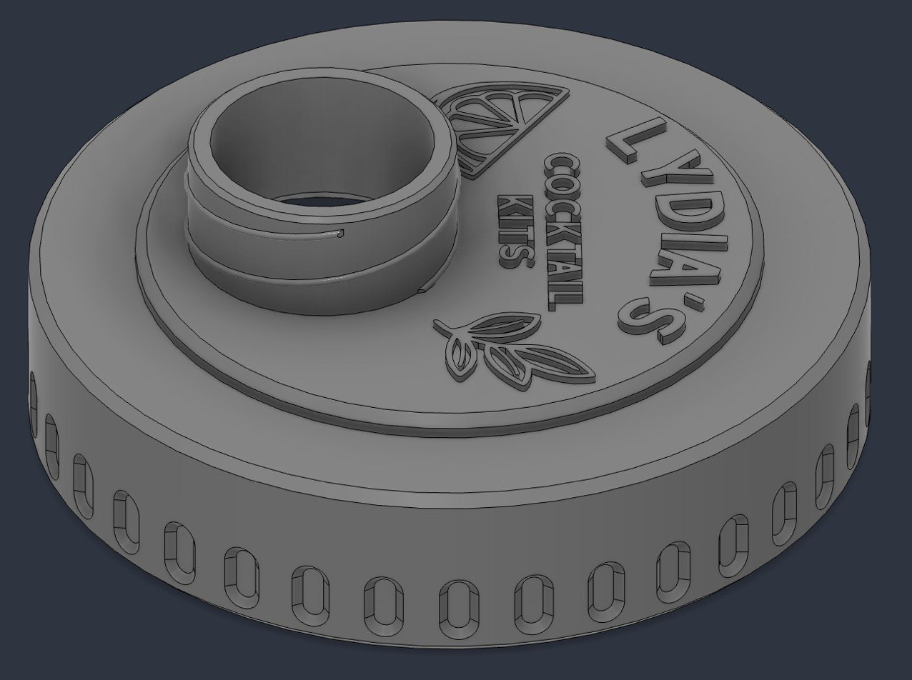
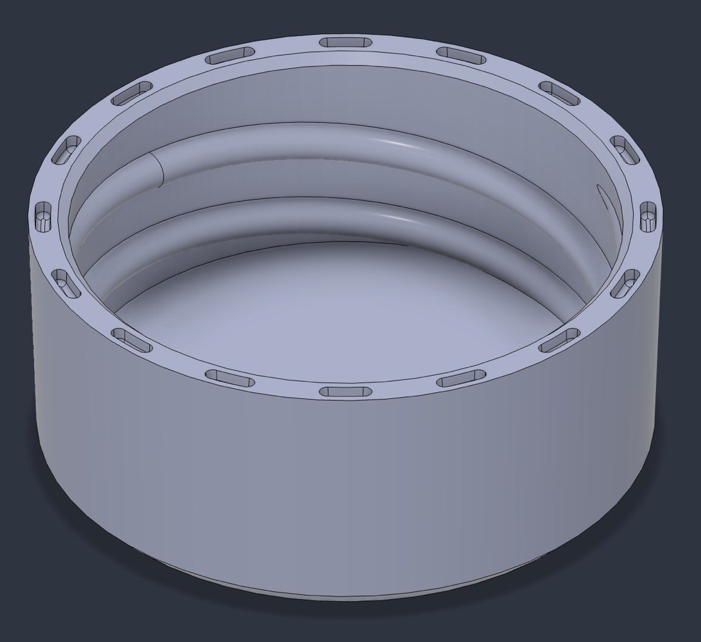
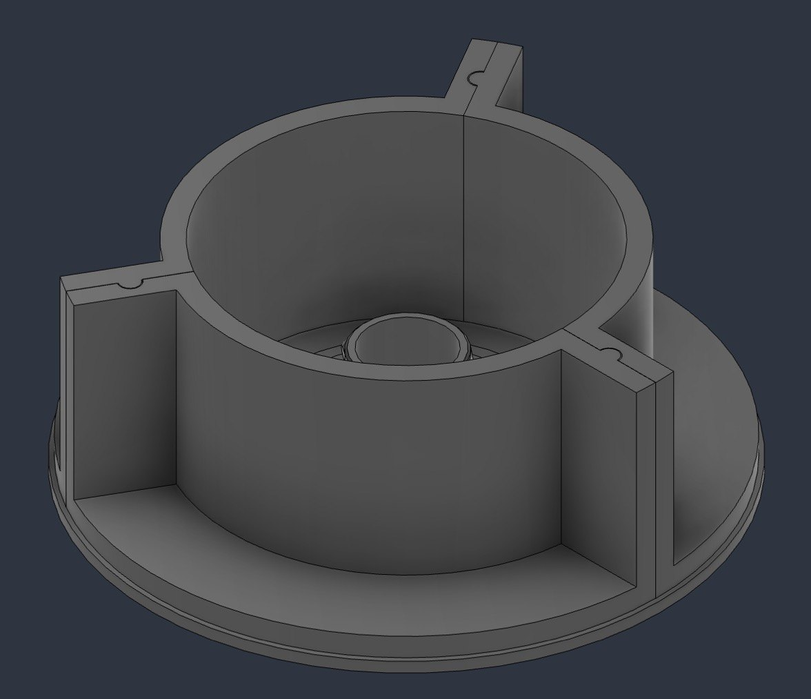
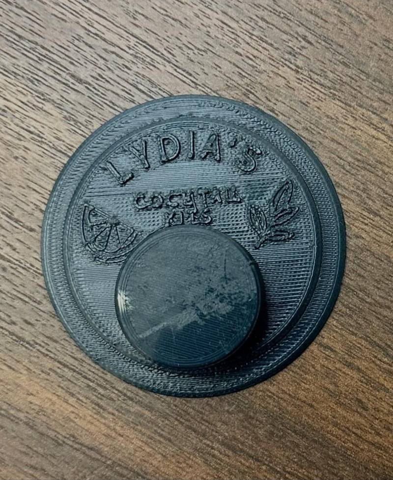
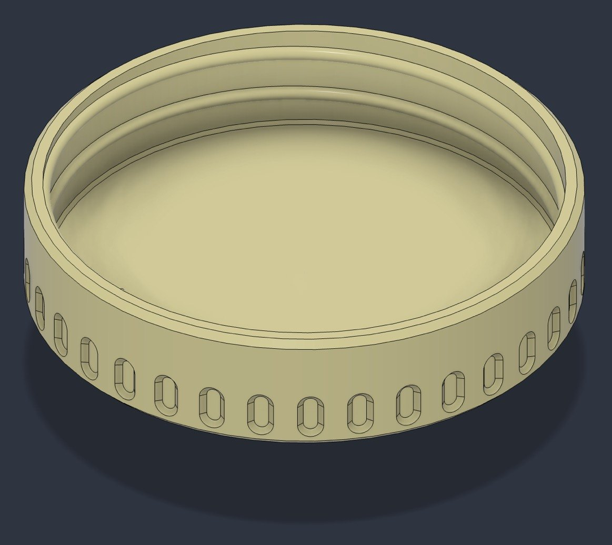
02 / Trydan Tech · 2024 · Internship
Body panel and battery enclosure CAD in Fusion 360 for an alternative-fuel mobility startup’s low-speed electric scooter, translating industrial design intent into manufacturable parts while balancing styling, packaging constraints, and fabrication feasibility. Paired with a 1,000+ participant design feedback survey that guided design and product decisions.
Digital manufacturing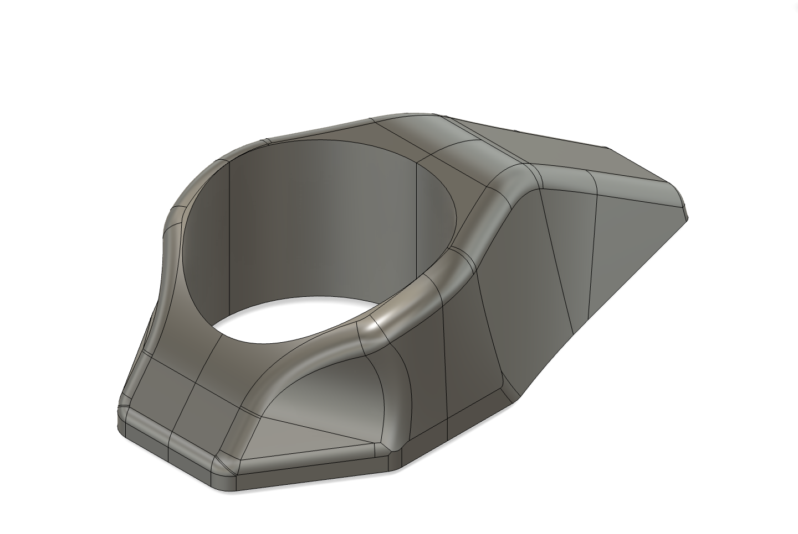
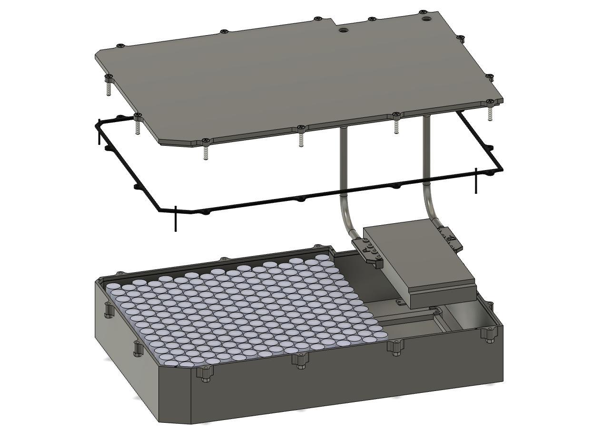
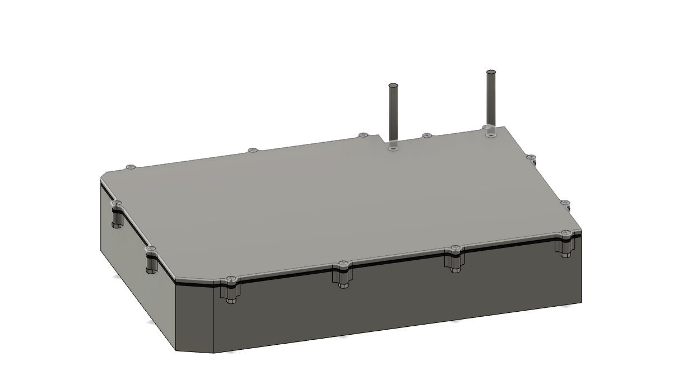
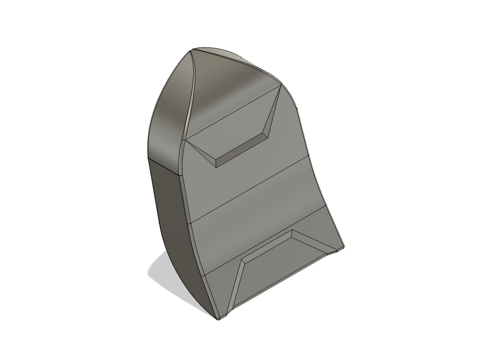
03 / SE 101 · 2022 · Group project
Disassembled and redesigned a children’s toy in Fusion 360, then evaluated the modeled parts through stress testing and documented the engineering rationale. The project focused on a compact foldable quadcopter.
CAD + testing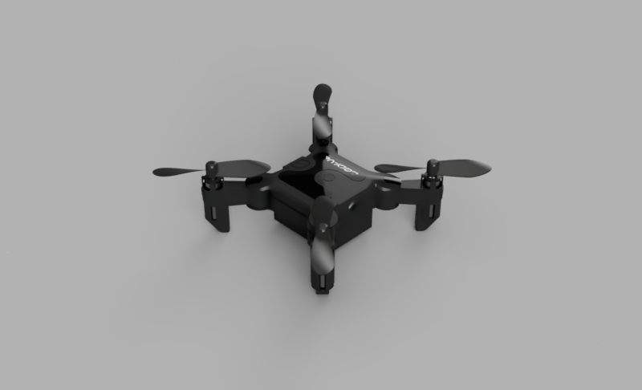
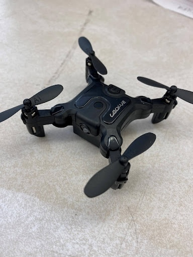
More projects
Software builds and tools.
04
2025 – present · AR + computer vision
A privacy-first connected-worker platform in development for Meta Ray-Bans and mobile devices. I’m building real-time video streaming, supervisor consoles, and scene-anchored OpenCV annotations with Python and FastAPI.
In development05
2026 · Computer vision · Personal project
A pose-estimation tool for cleaning dance formations: upload a rehearsal video, pick the dancers, and see who deviates from the reference and when. Built in Python with a Gradio web UI, it supports YOLO, RTMW, and MediaPipe pose models, stitches broken tracks back into one person per dancer (19 raw tracks to exactly 5 on a five-dancer clip), and scores each dancer against a group composite, a chosen dancer, or a solo reference video, with an adjustable timing tolerance. Covered by an automated test suite running in CI.
Gallery
Additional CAD and early design work.
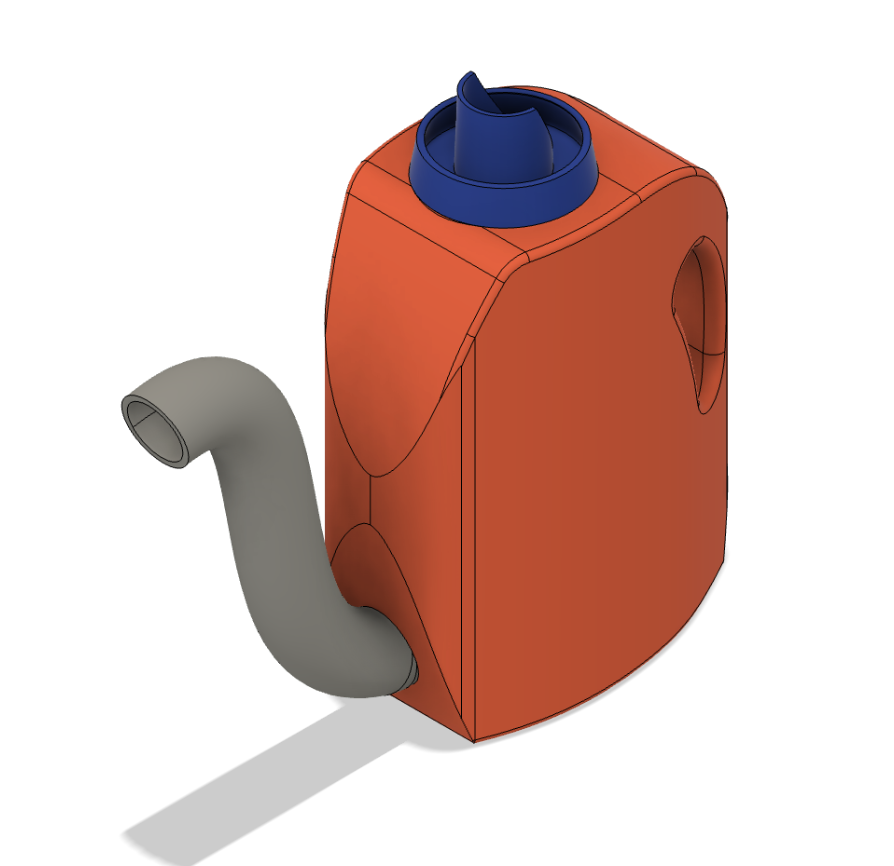
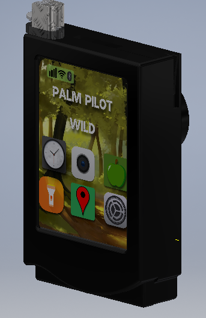
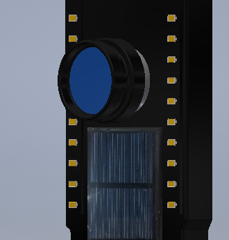
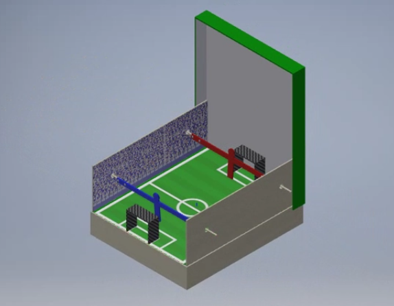
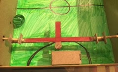
03 / About
I’m a senior at the University of Illinois Urbana-Champaign studying Systems Engineering & Design, with a Digital Prototyping concentration and an Informatics minor.
I like the connective tissue: translating a messy real-world problem into a clear workflow, a working prototype, and a system that people can actually use.
04 / Contact